Bicycle / 자전거
프레임과 구동계를 모델링하고 금속, 고무, 도장면의 재질을 표현한 자전거 프롭.
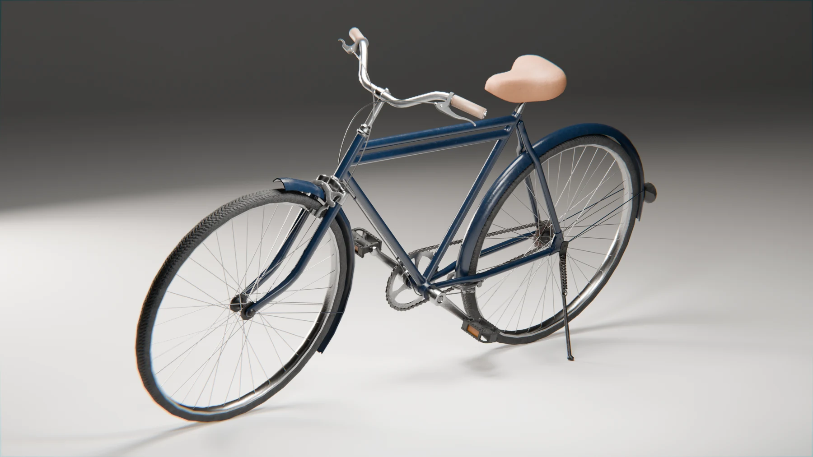
01 / Modeling
프레임과 구동계 모델링
Music: Dream Culture - Kevin MacLeod (incompetech.com), CC BY 4.0
음악 일부 발췌, 음량 조정, 페이드 적용. 음악 출처 안내
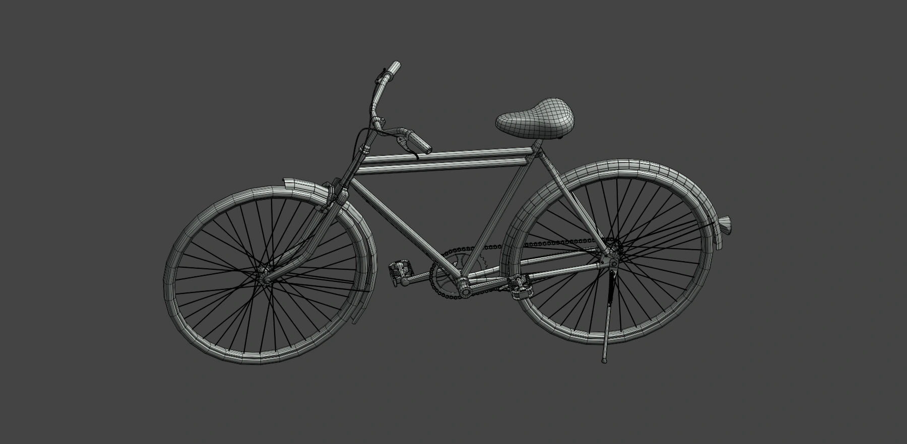
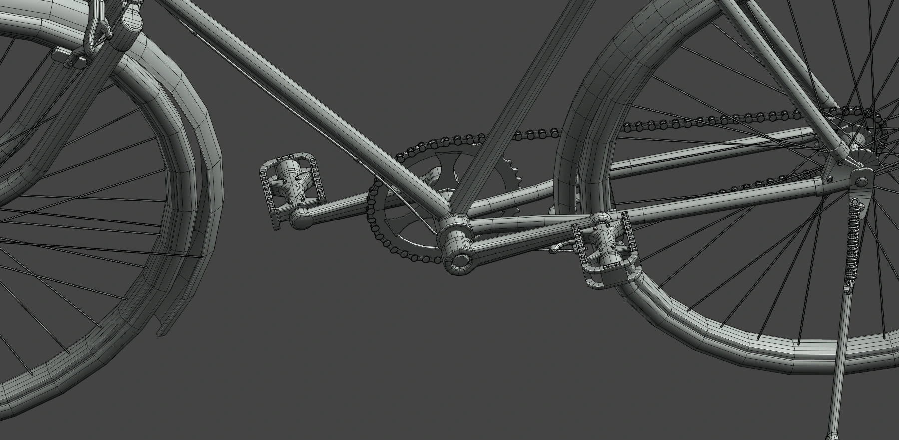
02 / Mesh Flow
최종 렌더와 메시 플로우
왼쪽: 최종 렌더 / 오른쪽: 같은 구도의 메시 플로우
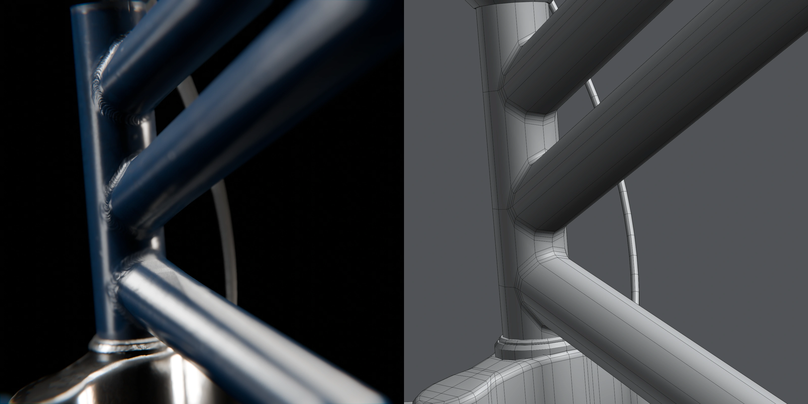
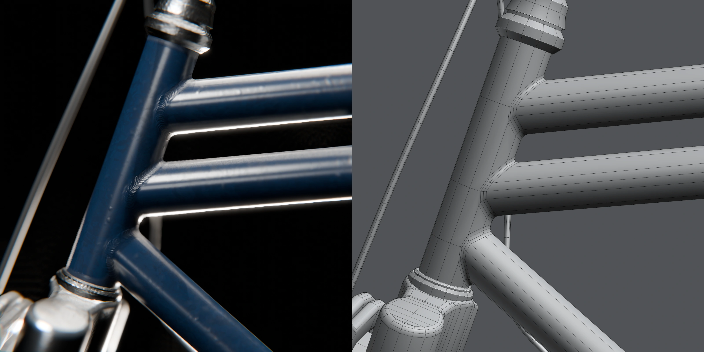
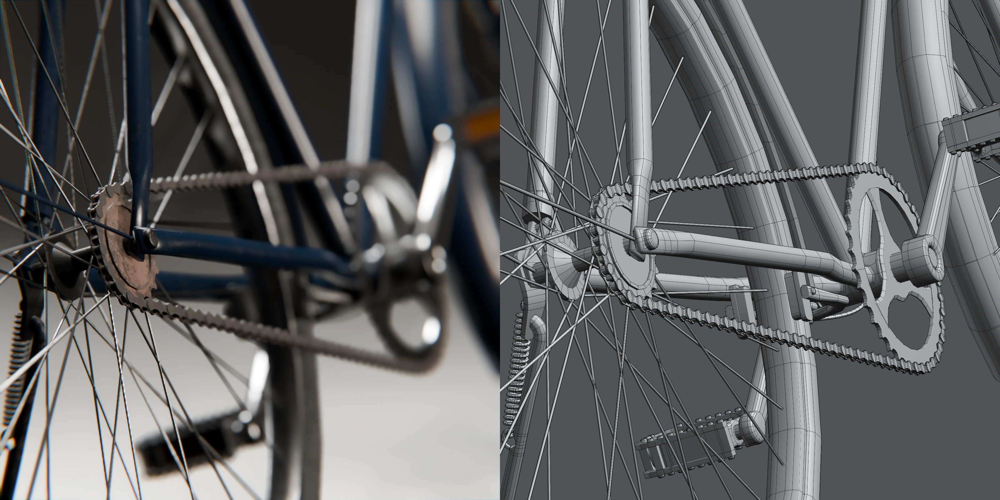
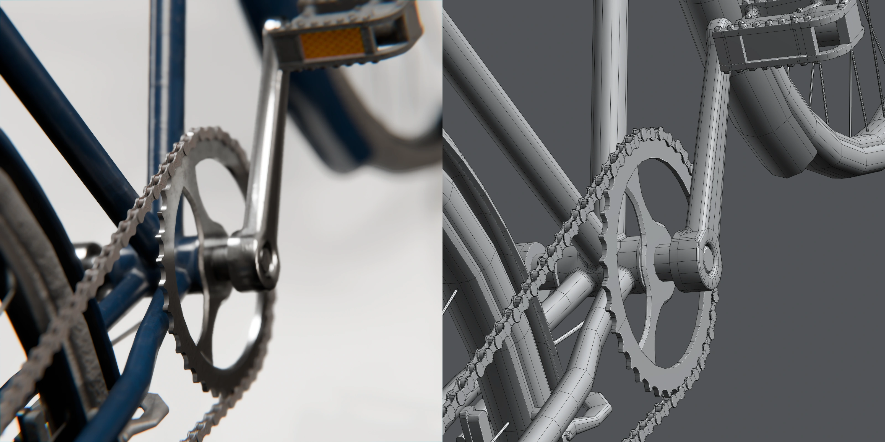
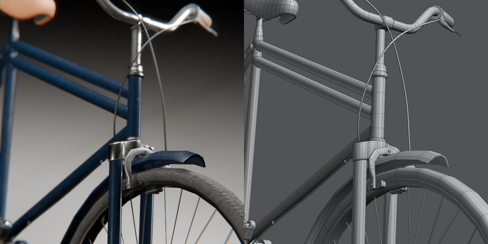
03 / Materials & UV
금속, 고무, 도장면의 재질
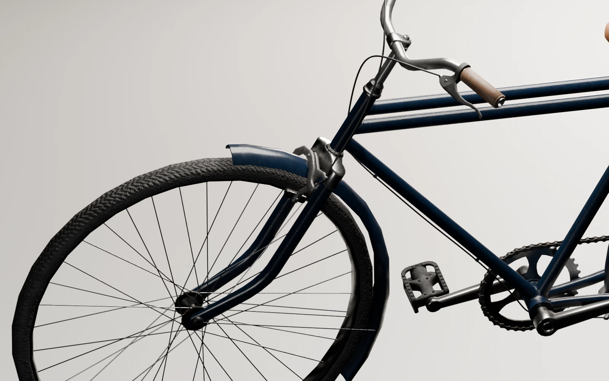
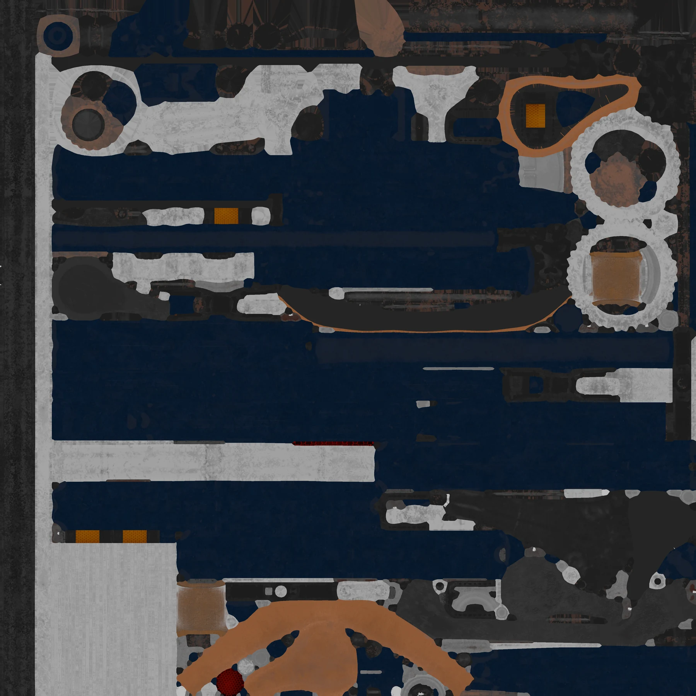
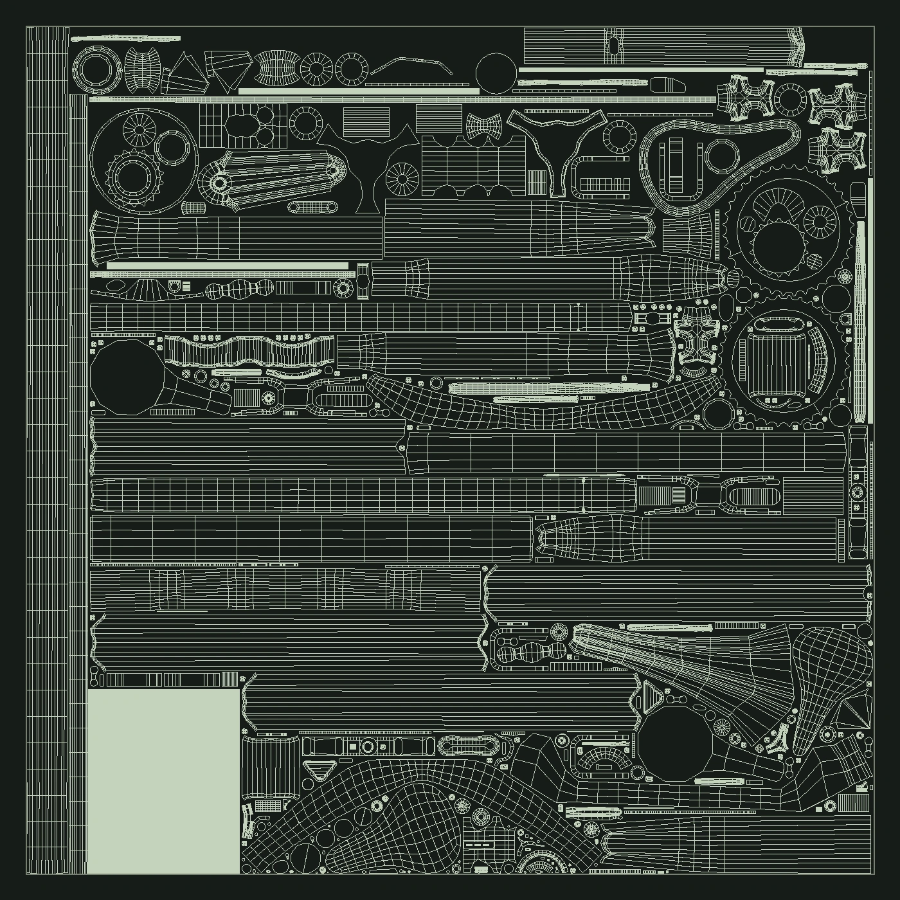
ROLE & CREDITS
담당 작업
모델링, UV, 텍스처링, 렌더링